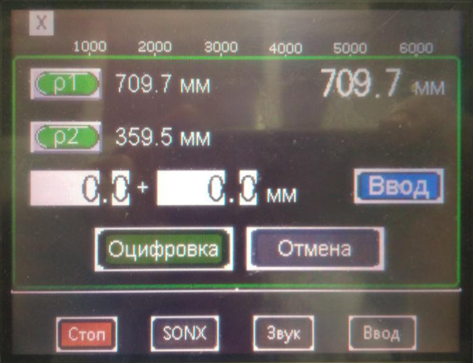

↑
Градуировка ДКС-АТ1121
1. УДГ-АТ110
- Установить 4-е дозиметра на УДГ-АТ110 таким образом, чтобы они расположились параллельно оси излучения, а
расстояние от источника до центра детектора равнялось -10 мм от края торца колпачка
Фото без корпусов на УДГ-АТ110

- На пульте управления КС-АТ110 нажать ЗАДАТЬ оцифровку в окне Х оцифровки

- Далее нажать Р1 и ОЦИФРОВКА

- Подключить к ПК
- Запустить ПО DU calibration
- Нажать Поиск
- Выбрать точку 1 диапазона (7-700 мк)
- Нажать начать измерения
- Установить источник 137Cs 7 мкЗв/ч
- Градуировать показания выставив коэф 1U (д.б.≈100) с учётом фона 0,1 мкЗв/ч
- Снять показания по 109Cd — 1м, 241Am — 1м, 60Со — 10 мкЗв/ч
- Снять точки 70 и 700 мкЗв/ч
- Данные переписать в журнал градуировки
1. УДГ-АТ130
- Установить дозиметры на УДГ-АТ130 таким образом, чтобы они расположились параллельно оси излучения, а
расстояние от источника до центра детектора равнялось -10мм от края торца колпачка

- На пульте управления КС-АТ130 нажать ЗАДАТЬ оцифровку в окне Х оцифровки

- Далее нажать Р1 и ОЦИФРОВКА

- Запустить ПО DU calibration
- Нажать Поиск

- Выбрать 2 диапазон (1-100 м)
- Нажать начать измерения
- Установить источник 137Cs 100 мЗв/ч
- Градуировать показания выставив коэф. 2U (д.б.≈100?)
- Снять точки 7 и 70 мЗв/ч
- Выбрать 3 диапазон (0.1-10 Зв)
- Нажать начать измерения
- Установить источник 137Cs 100 мЗв/ч
- Градуировать показания выставив коэф. 3U (д.б.≈200?)
- Установить источник 137Cs 7 Зв/ч
- Градуировать показания выставив коэф. 5U (д.б.≈50?)
- Снять точки 700 мЗв и 10 Зв/ч
- Данные переписать в журнал градуировки
3. ПСИ
- Установить дозиметры на УДГ-АТ130 таким образом, чтобы они расположились параллельно оси излучения, а
расстояние от источника до центра детектора выполнялось по кольцевой риске на колпачке
- На пульте управления КС-АТ130 нажать ЗАДАТЬ оцифровку в окне Х оцифровки
- Далее нажать Р1 и ОЦИФРОВКА

- Снять ПСИ
- 70 мк Зв\ч 700мкЗв/ч, 7м Зв\ч,70м Зв\ч 700мЗв/ч,7 Зв и 10Зв/ч